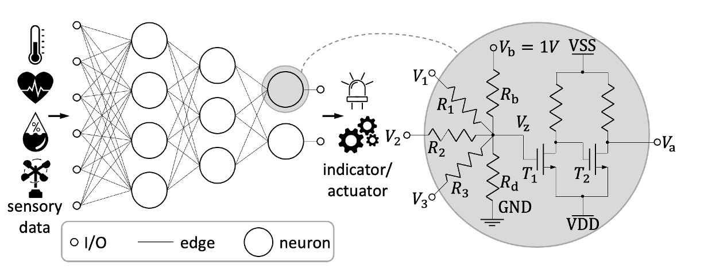

Figure 1: Schematic of an analog neuromorphic circuit
Neuromorphic circuits are specialized electronic circuits aiming to emulate computational paradigms in artificial neural networks (ANNs), primarily multilayer perceptrons (MLPs). ANNs are not only capable of solving highly-complicated problems, but also composed of only streamlined elemental operations, namely, weighted-sums and nonlinear activations. Since these operations can be easily implemented through simple circuits, neuromorphic circuits have garnered significant interest within the EDA community.
Difficulties in modeling the neuromorphic circuit?
Although neuromorphic circuits are designed to emulate ANNs, due to physical constraints, not all ANNs can be perfectly mapped into a corresponding neuromorphic circuit.
1. Constraint on the "weights"
Although neuromorphic circuits are designed to emulate ANNs, due to physical constraints, not all ANNs can be perfectly mapped into a corresponding neuromorphic circuit.